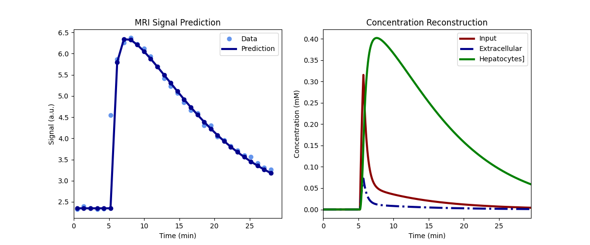
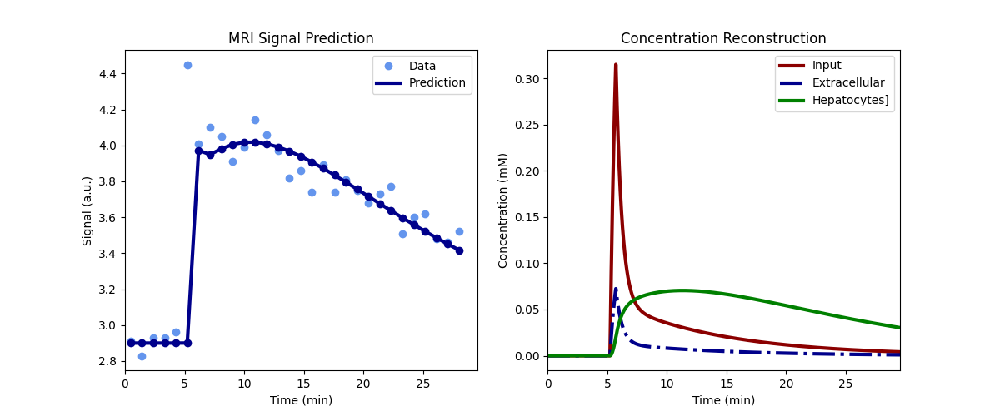
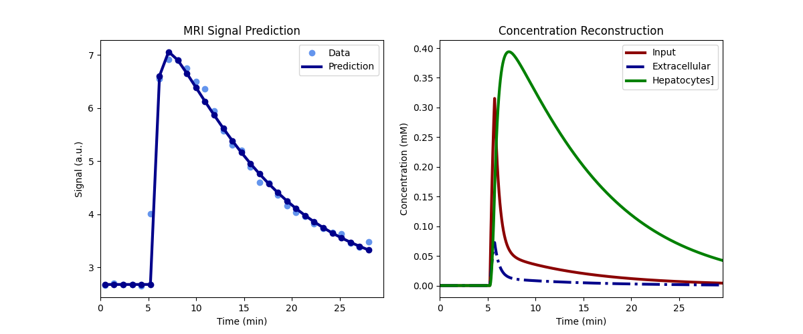
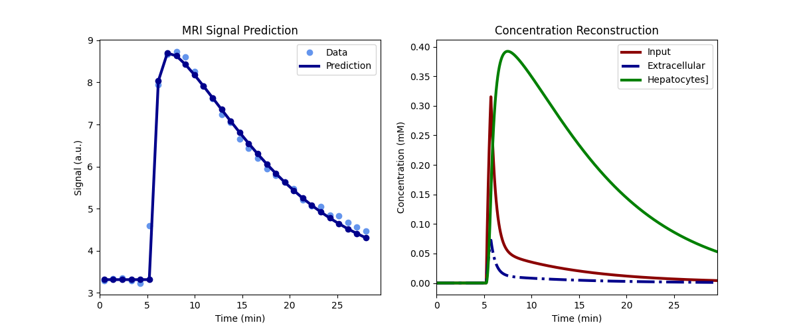

Note
Go to the end to download the full example code.
Liver#
Using Liver to measure hepatocellular function in rats.
This example illustrates the use of Liver with case studies,
measuring liver function in rats on Day 1 (control) and on Day 2 (after
administration of an inhibitor drug).
Setup#
# --- Import packages
import numpy as np
import pydmr
import dcmri as dc
Modelling#
This study uses an intracellullar agent, and in rats the mixing in the blood pool is fast, so we use a single inlet model (1I) for an intracellular agent (IC) with high flow (HF). We also want to use a calibrated model so S0 is derived from the data. All other default configurations are fine so don’t need to be specified explicitly:
liver = dc.InverseLiver(kinetics='1I-IC-HF', calibrate=True)
Let’s see what input parameters are needed for this model:
+-------------------------------------------------------------------------------------------------------------------------------------------------------------------------------+
| InverseLiver instance - inputs (n = 21) |
+----------------+------------+------------+--------------------------------------------------------------+-----------------+---------------+-----------------------+-----------+
| Key | Value | Unit | Name | Group | Bounds | DICOM | OSIPI |
+----------------+------------+------------+--------------------------------------------------------------+-----------------+---------------+-----------------------+-----------+
| B1corr_li | 1 | | B1-correction factor in the liver | electromagnetic | (0, 5) | | |
| me | 1 | A cm2/mL | equilibrium magnetization | electromagnetic | (0, 5) | | |
+----------------+------------+------------+--------------------------------------------------------------+-----------------+---------------+-----------------------+-----------+
| dt | 0.5 | sec | pseudo-continuous time step | hyperparameters | | | |
+----------------+------------+------------+--------------------------------------------------------------+-----------------+---------------+-----------------------+-----------+
| agent | gadoterate | | contrast agent generic name | indicator | | | |
| ci_li | 0.005 | mmol/mL | inlet concentration in the liver | indicator | | | |
+----------------+------------+------------+--------------------------------------------------------------+-----------------+---------------+-----------------------+-----------+
| pfree | None | a.u. | set of free parameters | inverse problem | | | |
+----------------+------------+------------+--------------------------------------------------------------+-----------------+---------------+-----------------------+-----------+
| k_e2h | 0.0025 | mL/sec/cm3 | tissue transfer rate from extracellular space to hepatocytes | physiological | (0, 0.006) | | |
| T_h | 14400 | sec | mean transit time in hepatocytes | physiological | (600, 21600) | | Q.PH1.006 |
| v_e_li | 0.25 | mL/cm3 | volume fraction in extracellular space of the liver | physiological | (0.01, 0.5) | | Q.PH1.001 |
| v_li | 1 | mL/cm3 | volume fraction in the liver | physiological | (0, 1) | | Q.PH1.001 |
+----------------+------------+------------+--------------------------------------------------------------+-----------------+---------------+-----------------------+-----------+
| FA | 15 | deg | flip angle | sequence | (0, 180) | FlipAngle | Q.MS1.007 |
| field_strength | 3 | T | magnetic field strength | sequence | (0, 20) | MagneticFieldStrength | |
| Nk0 | 64 | | number of acquired phase lines to the center of k-space | sequence | (0, 1000) | | Q.MS1.011 |
| Nph | 128 | | number of acquired phase lines in k-space | sequence | (0, 1000) | | Q.MS1.012 |
| TE | 0.001 | sec | echo time | sequence | (0, 10) | EchoTime | Q.MS1.005 |
| TR | 0.005 | sec | repetition time | sequence | (0, 1) | RepetitionTime | Q.MS1.006 |
| tstart | 0 | sec | start of the acquisition | sequence | (0, 10000.0) | | |
+----------------+------------+------------+--------------------------------------------------------------+-----------------+---------------+-----------------------+-----------+
| nb | 1 | a.u. | number of baseline time points | signal | | | |
| NSR_li | 0.0 | | noise-to-signal ratio in the liver | signal | (0, 100000.0) | | |
| S_li | 1.0 | a.u. | signal in the liver | signal | (0, 5) | | Q.MS1.001 |
| tS_li | 0.0 | sec | signal time points in the liver | signal | | | |
+-------------------------------------------------------------------------------------------------------------------------------------------------------------------------------+
Since we will be running this on different datasets, we first define a function which returns the data dictionary for a given dataset:
def get_data(study, subject, visit):
# --- Load the data
data = dc.load_tristan_rats(study, subject, visit)
# --- Define time points for simulation
dt = 0.5
tmax = np.amax(data['tS_li']) + 120
t = np.arange(0, tmax, dt)
# --- Constants
const = {
'ci_li': dc.aif_tristan_rat(t, BAT=data['BAT'], duration=data['duration']),
'dt': dt,
'H': 0.418,
'k_e2h': 0.0147,
'v_e_li': 0.23,
'v_li': 1.0,
'T_h': 30 * 60,
'pfree': {'k_e2h':[0, 1], 'T_h': [0, 60 * 60]},
}
return data | const
Case study 1 - strong inhibition#
For the first case study, we choose a subject from study 08 where all rats received a standard dose of cyclosporine on the second day. The study showed this to be a strong inhibitor of uptake and excretion:
study = 'tristan_rats_study_08_single_cyclosporine'
# --- Get the data
day_1_data = get_data(study, 'S08-02', 'Day_1')
day_2_data = get_data(study, 'S08-02', 'Day_2')
# --- Fit the models
day_1_result = liver(day_1_data)
day_2_result = liver(day_2_data)
Before we interpret the results, let’s verify the optimization has converged to a solution:
liver.plot(day_1_data, day_1_result)
liver.plot(day_2_data, day_2_result)


The model first the data well, so we can now consider the values for the derived parameters
dc.print_quantities(day_1_result['pars'], 'Day 1', digits=2)
dc.print_quantities(day_2_result['pars'], 'Day 2', digits=2)
+--------------------------------------------------------------------------------------------------------------------------------------------------+
| Day 1 |
+--------+--------+------------+--------------------------------------------------------------+-----------------+--------------+-------+-----------+
| Key | Value | Unit | Name | Group | Bounds | DICOM | OSIPI |
+--------+--------+------------+--------------------------------------------------------------+-----------------+--------------+-------+-----------+
| k_e2h | 0.015 | mL/sec/cm3 | tissue transfer rate from extracellular space to hepatocytes | physiological | (0, 0.006) | | |
| K_e2h | 0.065 | 1/sec | transfer rate from extracellular space to hepatocytes | physiological | (0.0, 0.1) | | Q.PH1.009 |
| k_h2b | 0.0011 | mL/sec/cm3 | tissue transfer rate from hepatocytes to blood | physiological | (0.0, 0.1) | | |
| K_h2b | 0.0019 | 1/sec | transfer rate from hepatocytes to blood | physiological | (0.0, 0.1) | | Q.PH1.009 |
| T_h | 520.0 | sec | mean transit time in hepatocytes | physiological | (600, 21600) | | Q.PH1.006 |
| v_e_li | 0.23 | mL/cm3 | volume fraction in extracellular space of the liver | physiological | (0.01, 0.5) | | Q.PH1.001 |
| v_h | 0.58 | mL/cm3 | volume fraction in hepatocytes | physiological | (0, 1) | | Q.PH1.001 |
| v_li | 1.0 | mL/cm3 | volume fraction in the liver | physiological | (0, 1) | | Q.PH1.001 |
+--------------------------------------------------------------------------------------------------------------------------------------------------+
+---------------------------------------------------------------------------------------------------------------------------------------------------+
| Day 2 |
+--------+---------+------------+--------------------------------------------------------------+-----------------+--------------+-------+-----------+
| Key | Value | Unit | Name | Group | Bounds | DICOM | OSIPI |
+--------+---------+------------+--------------------------------------------------------------+-----------------+--------------+-------+-----------+
| k_e2h | 0.0019 | mL/sec/cm3 | tissue transfer rate from extracellular space to hepatocytes | physiological | (0, 0.006) | | |
| K_e2h | 0.0084 | 1/sec | transfer rate from extracellular space to hepatocytes | physiological | (0.0, 0.1) | | Q.PH1.009 |
| k_h2b | 0.00049 | mL/sec/cm3 | tissue transfer rate from hepatocytes to blood | physiological | (0.0, 0.1) | | |
| K_h2b | 0.00084 | 1/sec | transfer rate from hepatocytes to blood | physiological | (0.0, 0.1) | | Q.PH1.009 |
| T_h | 1200.0 | sec | mean transit time in hepatocytes | physiological | (600, 21600) | | Q.PH1.006 |
| v_e_li | 0.23 | mL/cm3 | volume fraction in extracellular space of the liver | physiological | (0.01, 0.5) | | Q.PH1.001 |
| v_h | 0.58 | mL/cm3 | volume fraction in hepatocytes | physiological | (0, 1) | | Q.PH1.001 |
| v_li | 1.0 | mL/cm3 | volume fraction in the liver | physiological | (0, 1) | | Q.PH1.001 |
+---------------------------------------------------------------------------------------------------------------------------------------------------+
The values confirm the strong inhibition of liver function by the drug. The hepatocellular uptake rate (k_e2h) has dropped from 0.030 to 0.0039 mL/sec/cm3, and the biliary excretion rate (k_h2b) from 0.0022 to 0.00098 mL/sec/cm3.
Case study 2 - weak inhibition#
For the second case study we analyse data from study 06 where all rats received a dose of pioglitazone of the second day. The study showed this to be a weak inhibitor of excretion with no effect on uptake:
study = 'tristan_rats_study_06_single_pioglitazone'
# --- Get the data
day_1_data = get_data(study, 'S06-02', 'Day_1')
day_2_data = get_data(study, 'S06-02', 'Day_2')
# --- Fit the models
day_1_result = liver(day_1_data)
day_2_result = liver(day_2_data)
As before, always good to check the fit before interpreting the results:
# --- Update the data
day_1_data |= day_1_result['popt']
day_2_data |= day_2_result['popt']
# --- Plot the fits
liver.plot(day_1_data)
liver.plot(day_2_data)


Again we can verify the model fits the data well. Let’s have a look at the values for the derived parameters:
dc.print_quantities(day_1_result['pars'], 'Day 1', digits=2)
dc.print_quantities(day_2_result['pars'], 'Day 2', digits=2)
+--------------------------------------------------------------------------------------------------------------------------------------------------+
| Day 1 |
+--------+--------+------------+--------------------------------------------------------------+-----------------+--------------+-------+-----------+
| Key | Value | Unit | Name | Group | Bounds | DICOM | OSIPI |
+--------+--------+------------+--------------------------------------------------------------+-----------------+--------------+-------+-----------+
| k_e2h | 0.016 | mL/sec/cm3 | tissue transfer rate from extracellular space to hepatocytes | physiological | (0, 0.006) | | |
| K_e2h | 0.069 | 1/sec | transfer rate from extracellular space to hepatocytes | physiological | (0.0, 0.1) | | Q.PH1.009 |
| k_h2b | 0.0014 | mL/sec/cm3 | tissue transfer rate from hepatocytes to blood | physiological | (0.0, 0.1) | | |
| K_h2b | 0.0024 | 1/sec | transfer rate from hepatocytes to blood | physiological | (0.0, 0.1) | | Q.PH1.009 |
| T_h | 410.0 | sec | mean transit time in hepatocytes | physiological | (600, 21600) | | Q.PH1.006 |
| v_e_li | 0.23 | mL/cm3 | volume fraction in extracellular space of the liver | physiological | (0.01, 0.5) | | Q.PH1.001 |
| v_h | 0.58 | mL/cm3 | volume fraction in hepatocytes | physiological | (0, 1) | | Q.PH1.001 |
| v_li | 1.0 | mL/cm3 | volume fraction in the liver | physiological | (0, 1) | | Q.PH1.001 |
+--------------------------------------------------------------------------------------------------------------------------------------------------+
+--------------------------------------------------------------------------------------------------------------------------------------------------+
| Day 2 |
+--------+--------+------------+--------------------------------------------------------------+-----------------+--------------+-------+-----------+
| Key | Value | Unit | Name | Group | Bounds | DICOM | OSIPI |
+--------+--------+------------+--------------------------------------------------------------+-----------------+--------------+-------+-----------+
| k_e2h | 0.015 | mL/sec/cm3 | tissue transfer rate from extracellular space to hepatocytes | physiological | (0, 0.006) | | |
| K_e2h | 0.065 | 1/sec | transfer rate from extracellular space to hepatocytes | physiological | (0.0, 0.1) | | Q.PH1.009 |
| k_h2b | 0.0012 | mL/sec/cm3 | tissue transfer rate from hepatocytes to blood | physiological | (0.0, 0.1) | | |
| K_h2b | 0.0021 | 1/sec | transfer rate from hepatocytes to blood | physiological | (0.0, 0.1) | | Q.PH1.009 |
| T_h | 490.0 | sec | mean transit time in hepatocytes | physiological | (600, 21600) | | Q.PH1.006 |
| v_e_li | 0.23 | mL/cm3 | volume fraction in extracellular space of the liver | physiological | (0.01, 0.5) | | Q.PH1.001 |
| v_h | 0.58 | mL/cm3 | volume fraction in hepatocytes | physiological | (0, 1) | | Q.PH1.001 |
| v_li | 1.0 | mL/cm3 | volume fraction in the liver | physiological | (0, 1) | | Q.PH1.001 |
+--------------------------------------------------------------------------------------------------------------------------------------------------+
The values confirm the very weak effect of the drug on liver function. The hepatocellular uptake rate (k_e2h) has dropped from 0.032 to 0.030 mL/sec/cm3, and the biliary excretion rate (k_h2b) from 0.0029 to 0.0024 mL/sec/cm3.
Total running time of the script: (0 minutes 0.390 seconds)